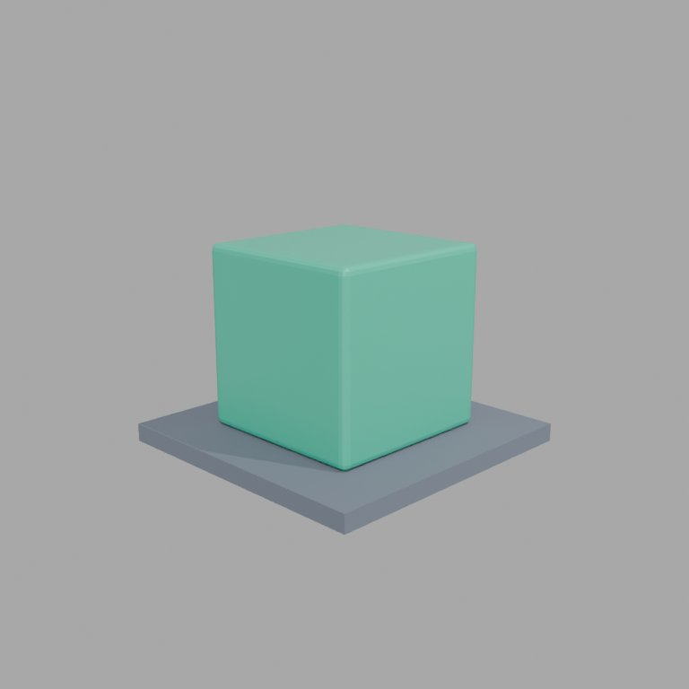
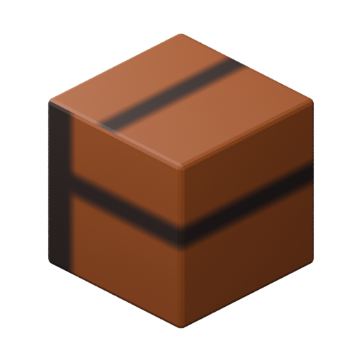

Meridius · Production tools · 23 October 2026
Mixar is connected and verified
Mixar 4.3.5 is installed alongside Blender. The workspace can inspect, edit, render, save and export through Mixar's official MCP tools.
Start working
Double-click Mixar.cmd in the repository root. Keep Mixar open
and signed in, then ask the workspace assistant to work in Mixar. New project
sessions load the configured mixar connection.
Suggested first request: “Use Mixar to inspect the open scene, then create a separate scene tab for a Meridius environment prop. Preserve the editable source.”
For an existing chat, the tested client in scripts/mixar/client.py
works immediately. Setup and recovery notes.
Verified results
| Check | Result |
|---|---|
| Official Windows release | SHA-256 matched; valid MIXAR INC signature. |
| Live MCP connection | Signed in, server connected, scene tools available; 73 tools discovered. |
| Scene editing | Separate tab, named one-metre cube, supporting base and two materials. |
| Visual and geometry check | 768 × 768 Cycles GPU preview inspected; zero ground penetration. |
| Files and rendering | Editable source saved; packed texture reopened; transparent PNG rendered with Cycles CPU. |
| Live asset export | Two meshes, two materials, 200 triangles; GLB and editable source verified. |
| Ordinary Blender | Blender 5.2.2 LTS retained the test geometry, packed texture and scale. |
| Godot 4.7.2 | PNG and both GLBs loaded; materials, alpha, scale and Y-up orientation passed. |
Evidence and editable files




Use it for Meridius
Keep editable Blender sources in the Meridius project. Save the scene first,
then use export_asset with destination: "project" to
keep its export package beside it. Transparent orthographic renders fit the
current sprite pipeline. The GLB route is also verified.
Installation checks used an isolated Godot project. Production game files and the frozen TypeScript game were unchanged.
Scope and account status
The account reported zero generation credits. All MCP checks charged zero credits. Hosted generation and the built-in Mixie chat were not tested. External MCP editing, rendering and export work with the workspace assistant. No paid provider or subscription was added.
The app is a local extraction under .cache/mixar/app; preserve
.cache/mixar to retain the installation and profile. Optional MCP
interface clicking remains off. Future updates and full layered-paint
compatibility with ordinary Blender have not been tested.